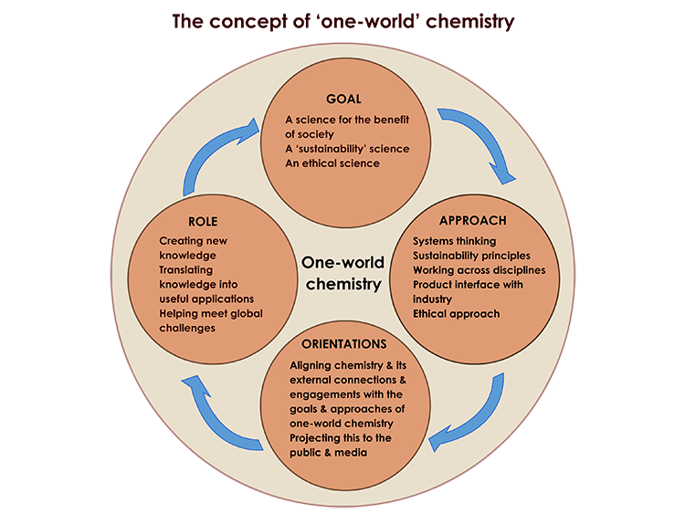

Systems thinking to shape the chemical sciences for sustainable development
An initiative of the International Organization for Chemical Sciences in Development
- • One-World Chemistry is a vision of how chemistry and related molecular sciences can work for the benefit of people, the biosphere and the physical environment of the planet, ensuring that future development is sustainable.
- • The figure below summarises the concept of One-World Chemistry and how these its goals link with the approaches and orientations envisaged and the roles that the chemical sciences can play.
The concept of ‘one-world’ chemistry
- • The chemical sciences provide understanding of the physical and chemical properties of atoms and molecules and practical methods for creating new molecular structures with useful applications. Chemistry is a ‘platform science’, contributing to fundamental aspects of a range of other sciences and underpinning the dramatic advances seen in recent decades in such fields as biotechnology, energy, the environment, genetics, materials and medicine.
- • In fact, the chemical sciences are at the heart of every aspect of productive human activity, for example playing a substantial role in our nutrition, health and wellbeing; in our sources of energy and materials; and in our transport, work and recreation. For more about the contributions of the chemical sciences to development, click here.